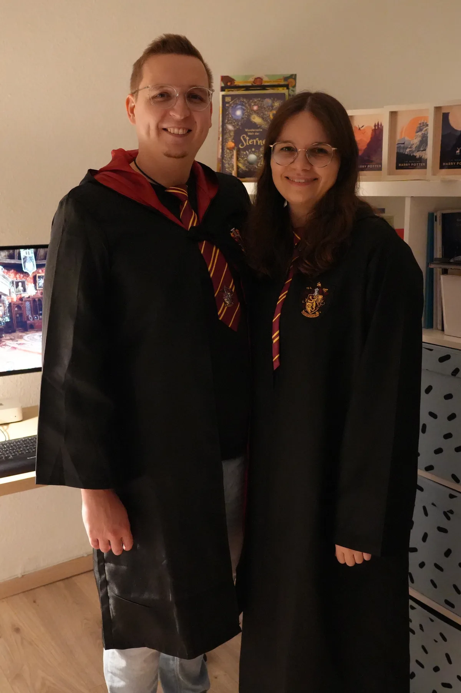
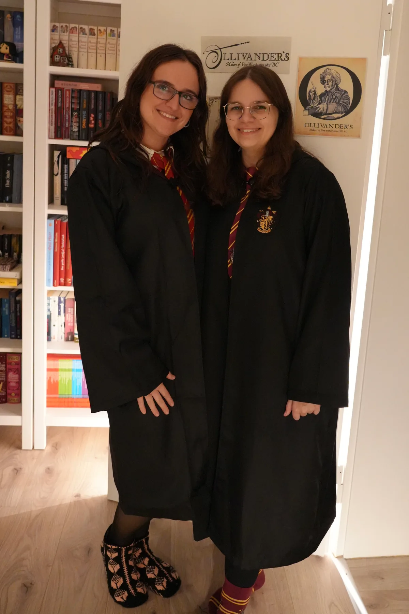
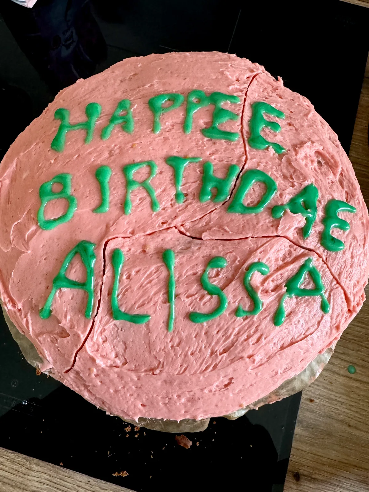
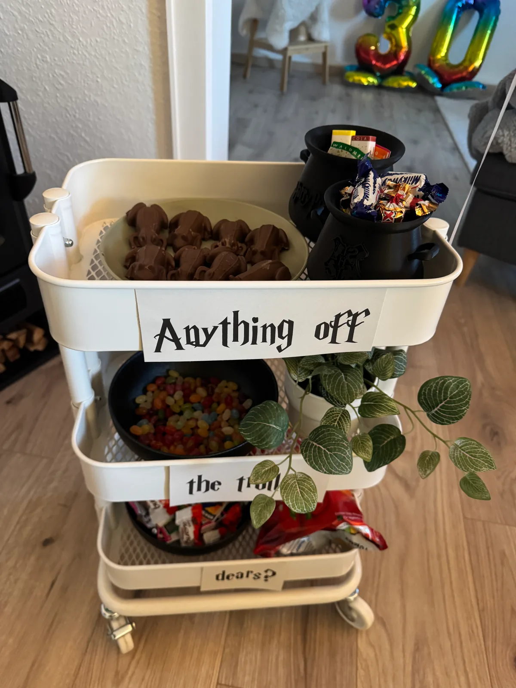

Zu meinem 30. Geburtstag verschickte ich ganz besondere Einladungskarten per Eulenpost.

Meine Gäste erschienen in ihren Schuluniformen und Hausumhängen und natürlich haben auch Henning und ich uns in Schale geworfen.



Es gab hausgemachte Kürbispasteten, gefüllte Alraunen, verbotene Waldpilze und eine Auswahl an deftigen Spezialitäten.
Natürlich durfte auch der ikonische Geburtstagskuchen und Süßigkeiten vom Servierwagen nicht fehlen: Von knusprigen Schokofröschen bis hin zu Bertie Botts Bohnen jeden Geschmacks war alles dabei.


Ein besonderes Highlight war Ollivanders Werkstatt. Jeder Gast konnte hier seinen persönlichen Zauberstab gestalten; natürlich mit verschiedenen Holzarten, Griffstrukturen und der passenden Magie im Kern. Schließlich wissen wir alle: Der Zauberstab sucht sich den Zauberer aus!


Es war ein rundum magischer Abend voller Nostalgie, Lachen und Zauberei. Danke noch einmal an alle Hexen und Zauberer, die mich an diesem Abend nach Hogwarts begleitet haben!
Hier auch noch das passende Video zu dem Abend: